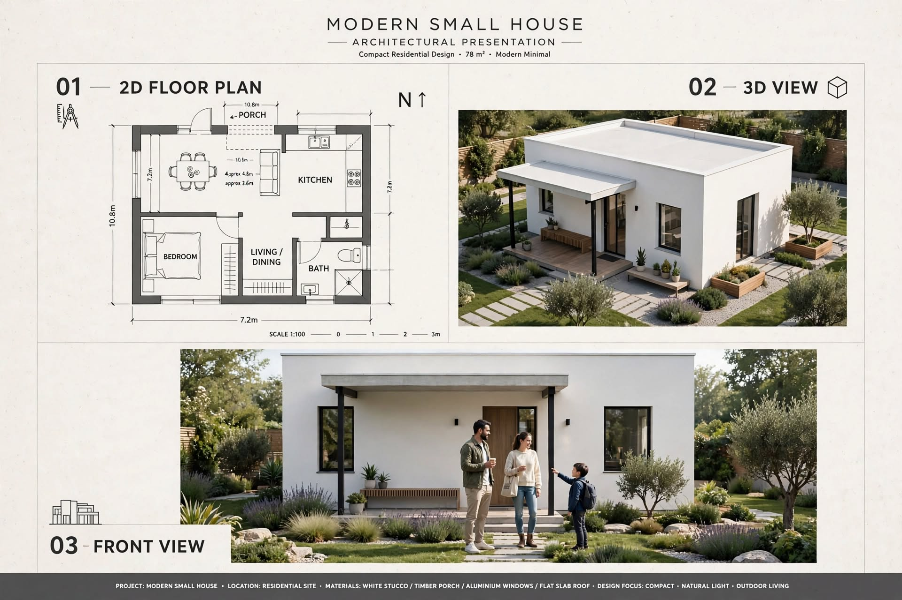

SMALL HOUSE PLANS · ARTICLE 12
78 m² Modern Small House with a Flat Roof
A minimalist modern small-home concept with an open living/dining area, kitchen, one bedroom and a shaded porch.

This guide reviews the supplied image as a design concept. It separates what is visibly stated in the drawing from items that still need professional measurement and confirmation.
1. Design Summary
This modern small-house board shows a white minimalist exterior, a flat slab roof, a shaded front porch and a simple landscape. The plan places a bedroom on one side, a combined living/dining area toward the centre, a kitchen toward the rear and a bathroom beside the main living zone. It is a one-bedroom concept rather than a two-bedroom family plan.
2. Footprint and Room Information
The overall dimensions are marked as 10.8 m × 7.2 m. Multiplying these figures gives 77.76 m², which can be rounded to approximately 78 m² as a gross rectangular footprint. This is not necessarily the net indoor floor area. The drawing does not provide reliable individual room dimensions, and the porch annotation appears inconsistent with the overall width. Ask the designer to state the enclosed area, porch area and any covered external space separately.
3. Living and Dining Arrangement
The combined living/dining zone can accommodate a compact sofa and a four-seat dining table if the actual room dimensions allow. Keep the main route from the entrance to the bedroom and bathroom clear. Use built-in or wall-mounted storage to reduce clutter. Large windows can connect the room to the garden, but consider privacy, glare and heat gain.
4. Kitchen and Bedroom Planning
The kitchen should be planned with a clear work sequence between refrigerator, sink, preparation counter and cooktop. Confirm ventilation and appliance clearances before cabinetry is made. In the bedroom, test the bed, wardrobe and bedside storage on the scaled plan. Place windows to support daylight and natural ventilation while preserving privacy from neighbouring properties.
5. Flat Slab Roof and Outdoor Space
The exterior render shows a clean flat-roof form with a small shaded porch. A reinforced-concrete roof slab requires structural design, correct falls, waterproofing, drainage outlets and overflow protection. The porch can provide shade and a sheltered arrival area; confirm its true depth and support positions. Simple paving and low-maintenance planting can complete the exterior without overcrowding a small plot.
6. Electrical, Plumbing and Construction Sequence
Plan sockets, lighting, switches and appliance circuits before plastering. Coordinate bathroom and kitchen pipe routes, drainage falls, access points and ventilation. After site survey and approvals, construction typically proceeds through setting out, foundations, floor and structural work, walls, roof, first-fix services, waterproofing, plastering, windows and doors, finishes, testing and inspection.
Construction, Services and Budget Planning
Before construction, confirm the site boundaries, access, levels, soil conditions and approval requirements. A qualified local professional should prepare the measured architectural and structural drawings. The normal sequence is setting out, foundations, floor and wall construction, roof installation, first-fix plumbing and electrical work, plastering, waterproofing, doors and windows, finishes, testing and final inspection.
Prepare a project-specific bill of quantities rather than relying on a generic online price. Include excavation, concrete, reinforcement, blocks or bricks, roof materials, doors, windows, plumbing, electrical work, waterproofing, flooring, paint, labour, transport, approvals and a contingency. Actual costs in Sri Lanka vary by district, access, soil, specification, supplier and quotation date.
Important Professional Checks
- Verify all external and internal dimensions on a scaled drawing.
- Coordinate door swings, window openings, furniture clearances and circulation.
- Have foundation, columns, beams, lintels and roof structure designed for the site.
- Plan safe electrical circuits, earthing, water supply, drainage and ventilation.
- Check local planning rules, setbacks, approvals and applicable building standards.
Disclaimer: This article explains an illustrative design concept. It is not an architectural, structural, engineering or cost-certified document and must not be used alone for construction.